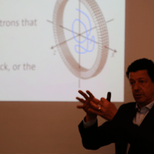
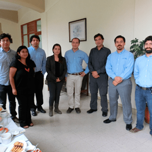
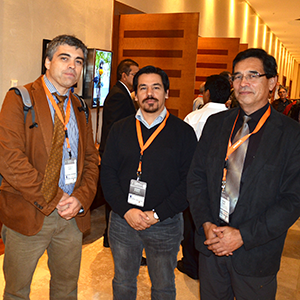

Noticias
-
Seminario Flotación, Jan Cilliers
El Departamento de Procesos de la empresa NETOS asistió al seminario "POSITRON VISUALIZATION OF FLOTATION PARTICLES AND LIQUID TO VALIDATE CFD MODELS".
Ver mas -
Taller de Innovación en el marco de Proyecto Voucher - CORFO
Los profesionales de la empresa se reunieron con Ingenieros de la Universidad Técnica Federico Santa María en el marco de las actividades que se están desarrollando en el Proyecto Voucher de Innovación que la empresa se adjudicó en el mes de septiembre de 2015
Ver mas -
Presentación en Procemin 2015
Hernán Robles, Gerente General de Netos S.A., presentó el trabajo titulado “New approach for load level estimation in SAG mills using a sensor system and optimization algorithm” el viernes 23 de octubre. En donde se expusieron los resultados del primer prototipo del sistema onMilL™
Ver mas -
Presentación en MAPLEMIN 2015
Netos S.A. participó, junto a la Universidad Técnica Federico Santa María, como expositor en el segundo Seminario Internacional de Mantenimiento de Plantas y Equipos Mina.
Ver mas -
Presentación en REVEMOL 2015
Javier Inostroza, Ingeniero Civil Metalúrgico perteneciente al área de Procesos de Netos S.A., participó como expositor en la octava versión del Congreso de Revestimientos de Molinos.
Ver mas -
Altium Designer: Especialización en USA
El área de Desarrollo Tecnológico viajó durante los meses de Abril y Mayo de 2015 a San José, California, para especializarse en el software Altium Designer con el objetivo de mejorar los diseños de PCB que realiza la empresa para diversos proyectos.
Ver mas -
Gerente General participa en “Certified Measurement & Verification Professional (CMVP®) 2015”
Hernán Robles, Gerente General de NETOS S.A., participó en el curso conducente a la certificación internacional en el protocolo de medición y verificación de rendimientos Certified Measurement & Verification Professional (CMVP), dictado por la Agencia Chilena de Eficiencia Energética
Ver mas -
NETOS se adjudica instrumento “CAPITAL HUMANO PARA LA INNOVACIÓN” de CORFO
La Corporación de Fomento de la Producción, CORFO, lanza un instrumento de financiamiento para estimular el desarrollo de innovaciones y de I+D en las Pymes nacionales: la empresa se adjudica dicho proyecto, desarrollado con el fin de mejorar la eficiencia y calidad en sus procesos de Investigación, Desarrollo e Innovación, incorporando un Ingeniero Civil Electrónico para el mejoramiento del área de innovación y desarrollo de la empresa.
Ver mas -
NETOS se adjudica instrumento “VOUCHER DE INNOVACIÓN EN PYMES” de CORFO
Con el objetivo de contribuir a desarrollar soluciones innovadoras a problemas de productividad y/o competitividad de las Pymes nacionales, a través del trabajo colaborativo entre las mismas e Instituciones de Educación Superior y Universidades acreditadas, la Corporación de Fomento de la Producción, CORFO, crea un instrumento de financiamiento que permite a la empresa contratar los servicios de 3 importantes Universidades del país
Ver mas -
NETOS se adjudica instrumento “ABSORCIÓN TECNOLÓGICA EN LAS PYMES” de CORFO
La Corporación de Fomento de la Producción, CORFO, crea un instrumento de financiamiento que permite a la empresa adquirir un software de diseño de circuitos impresos, denominado Altium Designer y la participación en los cursos de entrenamiento “Essentials” y “Advanced”, en el centro Altium Limited, California, USA
Ver mas